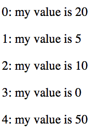

Data-Driven Documents
Visualizing Library Data with D3.js
Bret Davidson | NCSU Libraries
Agenda
- Example
- Why D3?
- Data Join
- API Highlights
- D3 @ NCSU
- Resources
Why D3?
- Web Standards
- Capability
- Community

Why not D3?
- Learning Curve
- Lower Level
- Simpler Needs
Example
var dataset = [20, 5, 10, 0, 50];
d3.select('body')
.selectAll('p') // selection
.data(dataset) // data binding
.enter() // create enter selection
.append('p') // dom manipulation
.style('font-size', '50px') // static property
.text(function (d, i) { // dynamic property
return i + ': my value is ' + d;
});
Output
Data Join
Data Join Demo
DemoEnter + Update + Exit
// Enter
rects.enter()
.append('rect');
// Update
rects.attr('x', 20)
.attr('y', function (d, i) {return 65 * i;})
.attr('height', '60' )
.attr('width', function(d, i) {return x(d);});
// Exit
rects.exit()
.remove();
Linear Scale
Linear Scale
var fontSize = d3.scale.linear()
.domain([0, d3.max(dataset)])
.range([25, 50]);
Array Methods
d3.max(array[, accessor]);
d3.min(array[, accessor]);
d3.extent(array[, accessor]);
d3.sum(array[, accessor]);
d3.mean(array[, accessor]);
d3.median(array[, accessor]);
d3.range([start, ]stop[, step]);
d3.nest()
.key(function(d) { return d.school })
.entries(array);
Other Scales
- power()
- log()
- quantize()
- quantile()
- threshold()
- ordinal()
- time()
SVG Generators
- Area
- Line
- Chord
- Diagonal
- Symbol
Layouts
- Force
- Hiearchy
- Histogram
- Pack
- Treemap
And More!
- Axes
- Transitions
- Color Scales
- Formatting
- Geography
D3 @ NCSU
Acknowledgments
Mike Bostock
Scott Cheng
Scott Murray
Suma Team
Jason Casden
Joyce Chapman
Bret Davidson
Rob Rucker
Rusty Earl
Eric McEachern
lib.ncsu.edu/dli/projects/spaceassesstoolThank You!
bret_davidson@ncsu.edu